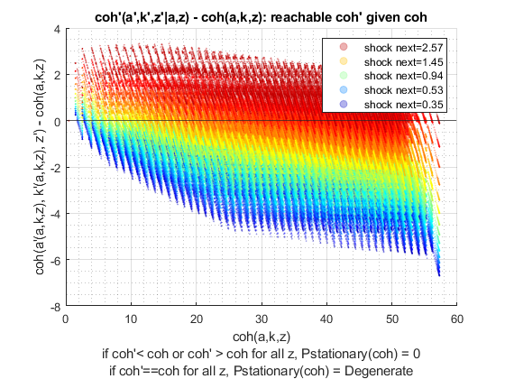
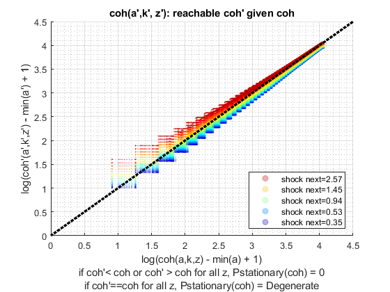

Derive Two Asset (Risky + Safe) and Choices/Outcomes Distribution (Analytical)
back to Fan's Dynamic Assets Repository Table of Content.
This uses ff_az_ds_vecsv, which works for single and multiple assets.
The function here works with both ff_akz_vf_vecsv as well as ff_wkz_vf_vecsv. Results are identical, but ff_wkz_vf_vecsv is significantly faster.
@include
@seealso
- derive distribution f(y'(y,z)) one asset loop: ff_az_ds
- derive distribution f(y'({x,y},z)) two assets loop: ff_akz_ds
- derive distribution f(y'({x,y},z, z')) two assets loop: ff_iwkz_ds
- derive distribution f(y'({y},z)) or f(y'({x,y},z)) vectorized: ff_az_ds_vec
- derive distribution f(y'({y},z, z')) or f(y'({x,y},z, z')) vectorized: ff_iwkz_ds_vec
- derive distribution f(y'({y},z)) or f(y'({x,y},z)) semi-analytical: ff_az_ds_vecsv
- derive distribution f(y'({y},z, z')) or f(y'({x,y},z, z')) semi-analytical: ff_iwkz_ds_vecsv
Contents
Set Parameters Main
Options for Distribution solutions
- it_subset = 5 is basic invoke quick test
- it_subset = 6 is invoke full test
- it_subset = 7 is profiling invoke
- it_subset = 8 is matlab publish
- it_subset = 9 is invoke operational (only final stats) and coh graph
close all; clear all; it_param_set = 8; st_akz_or_wkz = 'wkz';
Get Parameters
Note that akz and wkz share the smae funcgrid and default_param functions
% Set Parameters bl_input_override = true; [param_map, support_map] = ffs_akz_set_default_param(it_param_set); support_map('bl_profile_dist') = false; % Call Grid Generator <https://fanwangecon.github.io/CodeDynaAsset/m_akz/paramfunc/html/ffs_akz_get_funcgrid.html ffs_akz_get_funcgrid> [armt_map, func_map] = ffs_akz_get_funcgrid(param_map, support_map, bl_input_override); % 1 for override
Alternative 1: Solving the Dynamic Programming Problem (AKZ)
if (strcmp(st_akz_or_wkz, 'akz')) result_map = ff_akz_vf_vecsv(param_map, support_map, armt_map, func_map); end
Alternative 2: Solving the Dynamic Programming Problem (AWZ)
if (strcmp(st_akz_or_wkz, 'wkz')) result_map = ff_wkz_vf_vecsv(param_map, support_map, armt_map, func_map); end 
Distribution Start Profiler and Timer
% Start Profiling if (it_param_set == 7) profile off; profile on; end % Start Timer if (support_map('bl_time')) tic; end % Get Profile name st_profile_name_main = support_map('st_profile_name_main');
Derive Distribution
% Call Distribution Program <https://fanwangecon.github.io/CodeDynaAsset/m_az/solve/html/ff_az_ds_vec.html ff_az_ds_vec>
result_map = ff_az_ds_vecsv(param_map, support_map, armt_map, func_map, result_map, bl_input_override);
----------------------------------------
xxxxxxxxxxxxxxxxxxxxxxxxxxxxxxxxxxxxxxxx
Summary Statistics for: cl_mt_pol_coh
xxxxxxxxxxxxxxxxxxxxxxxxxxxxxxxxxxxxxxxx
----------------------------------------
fl_choice_mean
6.6414
fl_choice_sd
3.2081
fl_choice_coefofvar
0.4830
fl_choice_prob_zero
0
fl_choice_prob_below_zero
0
fl_choice_prob_above_zero
1.0000
fl_choice_prob_max
4.0305e-35
tb_prob_drv
percentiles cl_mt_pol_cohPercentileValues fracOfSumHeldBelowThisPercentile
___________ _____________________________ ________________________________
0.1 2.7703 0.00069849
1 2.9189 0.004584
5 3.3795 0.032016
10 3.9458 0.053826
15 4.1803 0.0984
20 4.3216 0.13587
25 4.4846 0.17815
35 4.6727 0.21852
50 5.557 0.33228
65 6.8355 0.47342
75 7.8814 0.58565
80 8.4891 0.65291
85 9.5307 0.71372
90 10.711 0.78852
95 13.177 0.8779
99 18.291 0.96896
99.9 24.692 0.99598
----------------------------------------
xxxxxxxxxxxxxxxxxxxxxxxxxxxxxxxxxxxxxxxx
Summary Statistics for: cl_mt_pol_a
xxxxxxxxxxxxxxxxxxxxxxxxxxxxxxxxxxxxxxxx
----------------------------------------
fl_choice_mean
0.3116
fl_choice_sd
1.1458
fl_choice_coefofvar
3.6771
fl_choice_prob_zero
0.8815
fl_choice_prob_below_zero
0
fl_choice_prob_above_zero
0.1185
fl_choice_prob_max
-1.8289e-33
tb_prob_drv
percentiles cl_mt_pol_aPercentileValues fracOfSumHeldBelowThisPercentile
___________ ___________________________ ________________________________
0.1 0 0
1 0 0
5 0 0
10 0 0
15 0 0
20 0 0
25 0 0
35 0 0
50 0 0
65 0 0
75 0 0
80 0 0
85 0 0
90 1.0204 0.11916
95 2.0408 0.33877
99 6.1224 0.75309
99.9 11.224 0.95767
----------------------------------------
xxxxxxxxxxxxxxxxxxxxxxxxxxxxxxxxxxxxxxxx
Summary Statistics for: cl_mt_pol_k
xxxxxxxxxxxxxxxxxxxxxxxxxxxxxxxxxxxxxxxx
----------------------------------------
fl_choice_mean
4.5107
fl_choice_sd
2.2178
fl_choice_coefofvar
0.4917
fl_choice_prob_zero
2.0787e-17
fl_choice_prob_below_zero
0
fl_choice_prob_above_zero
1.0000
fl_choice_prob_max
2.7759e-07
tb_prob_drv
percentiles cl_mt_pol_kPercentileValues fracOfSumHeldBelowThisPercentile
___________ ___________________________ ________________________________
0.1 2.0408 0.048506
1 2.0408 0.048506
5 2.0408 0.048506
10 2.0408 0.048506
15 3.0612 0.27939
20 3.0612 0.27939
25 3.0612 0.27939
35 3.0612 0.27939
50 4.0816 0.42889
65 5.102 0.61601
75 5.102 0.61601
80 6.1224 0.74123
85 6.1224 0.74123
90 7.1429 0.80377
95 9.1837 0.91266
99 12.245 0.97174
99.9 17.347 0.99698
----------------------------------------
xxxxxxxxxxxxxxxxxxxxxxxxxxxxxxxxxxxxxxxx
Summary Statistics for: cl_mt_pol_c
xxxxxxxxxxxxxxxxxxxxxxxxxxxxxxxxxxxxxxxx
----------------------------------------
fl_choice_mean
1.8192
fl_choice_sd
0.5539
fl_choice_coefofvar
0.3045
fl_choice_prob_zero
0
fl_choice_prob_below_zero
0
fl_choice_prob_above_zero
1.0000
fl_choice_prob_max
4.0305e-35
tb_prob_drv
percentiles cl_mt_pol_cPercentileValues fracOfSumHeldBelowThisPercentile
___________ ___________________________ ________________________________
0.1 0.72951 0.00067151
1 0.87804 0.0048445
5 0.99654 0.026976
10 1.1191 0.059063
15 1.2604 0.11006
20 1.3387 0.1374
25 1.4234 0.19492
35 1.5074 0.25414
50 1.7334 0.38022
65 2.0197 0.53374
75 2.162 0.64856
80 2.295 0.71757
85 2.3829 0.77205
90 2.597 0.8423
95 2.8274 0.9156
99 3.2736 0.98017
99.9 3.9464 0.99782
xxx All Variables PERCENTILES AND STATS xxx
tb_outcomes_meansdperc: mean, sd, percentiles
mean sd coefofvar min max pYis0 pYls0 pYgr0 pYisMINY pYisMAXY p0_1 p1 p5 p10 p15 p20 p25 p35 p50 p65 p75 p80 p85 p90 p95 p99 p99_9
_______ _______ _________ _______ ______ __________ _____ ______ __________ ___________ _______ _______ _______ ______ ______ ______ ______ ______ ______ ______ ______ ______ ______ ______ ______ ______ ______
cl_mt_pol_coh 6.6414 3.2081 0.48304 0.44365 57.277 0 0 1 2.0787e-17 4.0305e-35 2.7703 2.9189 3.3795 3.9458 4.1803 4.3216 4.4846 4.6727 5.557 6.8355 7.8814 8.4891 9.5307 10.711 13.177 18.291 24.692
cl_mt_pol_a 0.31162 1.1458 3.6771 0 44.898 0.8815 0 0.1185 0.8815 -1.8289e-33 0 0 0 0 0 0 0 0 0 0 0 0 0 1.0204 2.0408 6.1224 11.224
cl_mt_pol_k 4.5107 2.2178 0.49168 0 22.449 2.0787e-17 0 1 2.0787e-17 2.7759e-07 2.0408 2.0408 2.0408 2.0408 3.0612 3.0612 3.0612 3.0612 4.0816 5.102 5.102 6.1224 6.1224 7.1429 9.1837 12.245 17.347
cl_mt_pol_c 1.8192 0.55385 0.30445 0.44365 7.2772 0 0 1 2.0787e-17 4.0305e-35 0.72951 0.87804 0.99654 1.1191 1.2604 1.3387 1.4234 1.5074 1.7334 2.0197 2.162 2.295 2.3829 2.597 2.8274 3.2736 3.9464
xxx All Variables Fraction of Y Held up to Percentile xxx
tb_outcomes_fracheld: fraction of asset/income/etc held by hh up to this percentile
fracByP0_1 fracByP1 fracByP5 fracByP10 fracByP15 fracByP20 fracByP25 fracByP35 fracByP50 fracByP65 fracByP75 fracByP80 fracByP85 fracByP90 fracByP95 fracByP99 fracByP99_9
__________ _________ ________ _________ _________ _________ _________ _________ _________ _________ _________ _________ _________ _________ _________ _________ ___________
cl_mt_pol_coh 0.00069849 0.004584 0.032016 0.053826 0.0984 0.13587 0.17815 0.21852 0.33228 0.47342 0.58565 0.65291 0.71372 0.78852 0.8779 0.96896 0.99598
cl_mt_pol_a 0 0 0 0 0 0 0 0 0 0 0 0 0 0.11916 0.33877 0.75309 0.95767
cl_mt_pol_k 0.048506 0.048506 0.048506 0.048506 0.27939 0.27939 0.27939 0.27939 0.42889 0.61601 0.61601 0.74123 0.74123 0.80377 0.91266 0.97174 0.99698
cl_mt_pol_c 0.00067151 0.0048445 0.026976 0.059063 0.11006 0.1374 0.19492 0.25414 0.38022 0.53374 0.64856 0.71757 0.77205 0.8423 0.9156 0.98017 0.99782
End profiler and Timer
% End Timer if (support_map('bl_time')) toc; end % End Profiling if (it_param_set == 7) profile off profile viewer % append function name st_func_name = 'ff_akz_ds_vecsv'; support_map('st_profile_path') = [support_map('st_matimg_path_root') '/solve/profile/']; support_map('st_profile_name_main') = [st_func_name st_profile_name_main]; % support_map params_group = values(support_map, {'st_profile_path', ... 'st_profile_prefix', 'st_profile_name_main', 'st_profile_suffix'}); [st_profile_path, st_profile_prefix, st_profile_name_main, st_profile_suffix] = params_group{:}; % Save st_file_name = [st_profile_prefix st_profile_name_main st_profile_suffix]; profsave(profile('info'), strcat(st_profile_path, st_file_name)); end